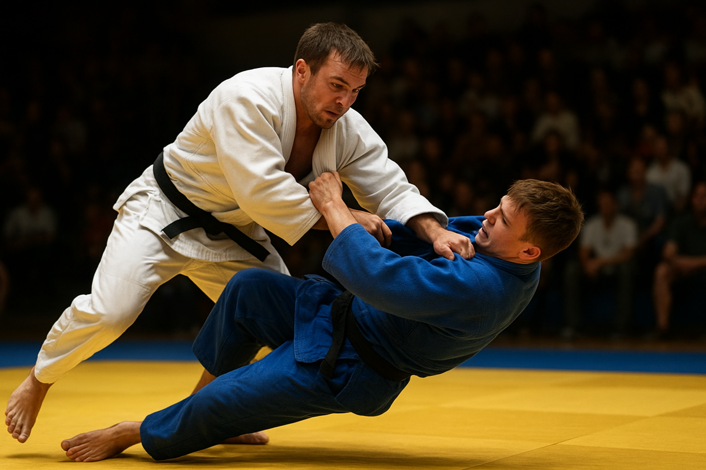

Judo ist eine Kampfkunst und ein Sport, bei dem es vor allem darauf ankommt, Technik, Geschick und Konzentration einzusetzen. Anders als bei manchen anderen Kampfsportarten geht es beim Judo nicht darum, so stark wie möglich zu sein. Viel wichtiger ist es, den eigenen Körper zu kontrollieren, Bewegungen genau auszuführen und die Bewegungen des Partners zu verstehen.
Beim Judo lernt man, wie man sicher fällt, wirft und sich bewegt, ohne sich selbst oder andere zu verletzen. Die Übungen sind so aufgebaut, dass man Schritt für Schritt immer neue Fähigkeiten erlernt. Auch die Kraft wird trainiert, aber vor allem durch gezielte Bewegungen und nicht durch rohes Drücken oder Kämpfen.

Judo ist nicht nur ein Sport, sondern auch ein Training für den Geist. Man lernt, geduldig zu sein, genau hinzuschauen und Situationen richtig einzuschätzen. Wer regelmäßig Judo übt, entwickelt mehr Selbstvertrauen, Konzentration und Ausdauer – Fähigkeiten, die auch außerhalb des Sports nützlich sind, zum Beispiel in der Schule oder im Alltag.
Judo kann viel mehr als nur Sport sein. Viele Judoka merken, dass sie die Fähigkeiten aus dem Training auch im Alltag anwenden können. Zum Beispiel lernt man durch das Fallen und Rollen, sich besser abzufedern und Verletzungen zu vermeiden. Durch die Übungen zur Konzentration fällt es leichter, Aufgaben aufmerksam zu bearbeiten oder in stressigen Situationen ruhig zu bleiben.
Außerdem fördert Judo soziale Fähigkeiten. Man trainiert mit Partnern, lernt, fair miteinander umzugehen und sich gegenseitig zu unterstützen. Dadurch entstehen Freundschaften und ein starkes Gemeinschaftsgefühl. Judo kann also helfen, Teamarbeit, Respekt und gegenseitige Rücksichtnahme zu trainieren – Werte, die man auch in der Schule, zu Hause oder mit Freunden braucht.
Viele Judoka berichten, dass sie sich durch das Training stärker und selbstbewusster fühlen. Man lernt, auf den eigenen Körper zu achten, Grenzen zu erkennen und diese bewusst zu nutzen. Gleichzeitig wird man körperlich fitter, kräftiger und beweglicher.